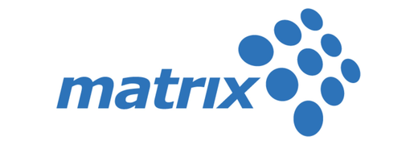

Large-scale UX for public, financial, healthcare, and service platforms
As a UX Specialist at Matrix Experience, I led UX definition and interaction design for selected large-scale client projects, working with project managers, stakeholders, architects, data teams, and UI designers. My role included structuring flows, defining UX direction, guiding UI designers through delivery, and reviewing design quality.
Israel Electric Company
A primary Matrix account and large public-service ecosystem. I led UX work across selected customer-service flows and strategic initiatives, working with project managers and directly with the client’s Chief Digital Officer on more strategic discussions.
Israeli Soccer Association
A fast R&D-style project developed directly with the division manager and association stakeholders. The client had a large requirements document but no clear product direction; the work translated that ambiguity into a concrete mobile app concept that was later presented successfully and used as a reference brief for continued design work.
Enterprise, public-service, and healthcare UX range
These projects reflect work across public service, finance, healthcare, and mobile platforms — each requiring structured UX thinking, stakeholder alignment, and clear translation of complex services into usable flows. Some were full UX ownership; others were contribution within a larger Matrix design chain.
Tel Aviv Stock Exchange / Data Store
Contributed UX direction for responsive financial data-product experiences, working with a product architect, stakeholders, and a UI designer. The challenge centered on product packages, purchase flows, and responsive behavior under strong stakeholder requirements.
Avodata
Led UX for a government-supported B2C platform designed to help people understand professions, education paths, thresholds, and career options. The key challenge was turning public data into usable decision support for very different audiences.
Healthcare systems
Contributed to healthcare-related side projects, adding experience with patient workflows, medical-service interfaces, and complex operational contexts. This work is kept smaller to reflect the level of ownership accurately.
High-variety client work that strengthened senior UX judgment.
Matrix exposed me to large organizations, public-service constraints, strong stakeholders, design-delivery chains, and fast domain shifts. It helped mature my UX practice before moving into deeper product-platform ownership at Imubit.